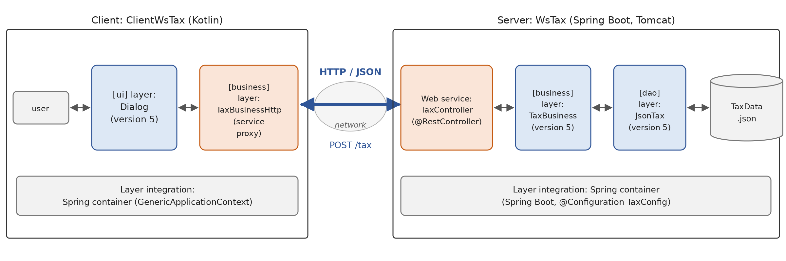

13. Web 服务
13.1. 简介
在上一章中，我们介绍了几个 TCP/IP 客户端/服务器应用程序。由于客户端和服务器交换的是文本行，它们可以用任何语言编写。客户端只需要知道服务器所期望的通信协议。
Web 服务同样是服务器应用程序（TCP/IP）。它们具有以下特点：
- 它们由 Web 服务器托管，客户端与服务器之间的交换协议是 HTTP（超文本传输协议，HyperText Transfer Protocol），这是一个构建在 TCP/IP 之上的协议，我们在上一章中已经探讨过；
- 无论提供何种服务，Web 服务都有标准的通信协议。一个 Web 服务提供多种服务：S1、S2……、Sn。每个服务都需要客户端提供参数，并向客户端返回结果。对于每个服务，客户端需要知道：
- 如何指定服务 Si；
- 需要提供的参数列表及其类型；
- 服务返回的结果类型。一旦知道了这些要素，无论查询的是哪个 Web 服务，客户端与服务器的对话都遵循相同的格式。这使客户端通信标准化；
- 为了防范来自互联网的攻击，许多组织只对外开放其服务器上的某些端口：Web 服务主要是 80（HTTP）和 443（HTTPS）端口，其他所有端口都被锁定。因此，诸如上一章所述的客户端/服务器应用程序通常仅限于组织的专用网络（内部网）。将服务托管在 Web 服务器上，就使整个互联网社区都能访问它；
- Web 服务可以被看作一个远程对象：它提供的服务就成为该对象的方法。客户端可以通过一个称为代理的中间对象，像使用本地对象一样使用这个远程对象，代理隐藏了所有网络通信。这使我们能够构建与这一层无关的客户端：如果这一层发生变化，客户端的其余部分无需修改；
- 与上一章的 TCP/IP 客户端/服务器应用程序一样，客户端和服务器可以用任何编程语言编写。它们交换由两部分组成的文本行：HTTP 协议要求的头部，以及消息体，消息体的格式由客户端和服务器约定。
基于 Web 服务的客户端/服务器应用程序的架构如下：

这是对第 6 章分层架构的扩展，并增加了专门的网络通信层：客户端一侧的 Web 服务客户端，以及服务器一侧的 Web 服务本身。我们在上一章的 TCP 税款计算服务器（版本 8）中已经遇到过类似的架构。
13.1.1. 过去：SOAP 和 WSDL
在 2000 年代，Web 服务大多遵循 SOAP 标准（简单对象访问协议，Simple Object Access Protocol）。客户端发送一个 HTTP 请求，其请求体是一个 XML 文档：一个“信封”，其中包含被调用方法的名称及其参数。服务器则以另一个包含结果的 XML 信封作出响应。每个服务都由一个 WSDL 格式（Web 服务描述语言，Web Services Description Language）的 XML 文档描述，该文档可在服务的 URL 后加上 [?wsdl] 获得：它列出了方法、参数及其类型。工具根据这份文档自动生成服务代理。
在 JVM 中，这些服务是使用 API 和 JAX-WS 定义的：一个带有 [@WebService] 注解的类，其公共方法（可以用 [@WebMethod] 注解）成为服务的方法；[wsimport] 工具根据 WSDL 生成客户端代理。JAX-WS 从 Java 6 到 Java 10 是 JDK 的一部分；在 Java 11 中被移除（JEP 320），现在以 Jakarta XML Web Services 的名称存在于 JDK 之外。Kotlin 于 2016 年发布（1.0 版），在那个时代并未真正出现：JAX-WS 可以像任何 Java 库一样 从 Kotlin 中使用，但新的服务已很少再使用它。造成这种转变的原因包括 XML 和 SOAP 信封的繁琐、相关标准（WS-Security、WS-Addressing 等）的复杂性，以及难以从浏览器调用这些服务。
13.1.2. 现在：REST 和 JSON
当前大多数 Web 服务遵循 REST 风格（表述性状态转移，REpresentational State Transfer），并交换 JSON 文档（JavaScript 对象表示法，JavaScript Object Notation，第 5 章已介绍）。REST 风格基于以下原则：
- 服务公开 资源，每个资源由一个 URL 指定：[/tax]、[/clients/12]、[/clients/12/orders]；
- 这些资源通过 HTTP 协议的 方法 （也称为动词）访问，每个方法都有特定的含义；
- 操作的结果由响应中的 HTTP 状态码 指示；
- 请求和响应的主体通常是 JSON 文档，它比 XML 更紧凑、更简单；
- 服务是 无状态的：每个请求都包含处理它所需的全部信息；对于某个给定的客户端，服务器不会在两次请求之间保留任何信息。
最常用的 HTTP 方法如下：
方法 | 用途 | 示例 |
GET | 读取资源；任何参数都在 URL 中 | GET /clients/12 |
POST | 创建资源或请求处理；数据在请求体中 | POST /clients |
PUT | 替换资源 | PUT /clients/12 |
PATCH | 修改资源的一部分 | PATCH /clients/12 |
DELETE | 删除资源 | DELETE /clients/12 |
我们在上一章中介绍过的状态码，在这里体现出其完整的含义：
代码 | 含义 |
200 OK | 请求成功；响应体包含结果 |
201 Created | 资源已创建；[Location] 头部提供其 URL |
204 No Content | 请求成功；响应没有主体 |
400 Bad Request | 请求无效（缺少参数或参数无效等） |
404 Not Found | 所请求的资源不存在 |
415 Unsupported Media Type | 所发送文档的类型（头部 [Content-Type]）不被接受 |
500 Internal Server Error | 服务器上发生了意外错误 |
REST 服务并没有强制性的 WSDL 等价物。不过，通常的做法是使用 OpenAPI 文档（前身为 Swagger）来描述它，格式为 JSON 或 YAML，工具可以据此生成文档、测试页面和客户端。我们稍后再回到这一点。
最后，请留意 gRPC，它由 Google 设计：服务的方法及其消息在一个 [.proto] 文件中描述，工具据此生成服务器和客户端，就像 WSDL 时代那样；消息以紧凑的二进制格式（Protocol Buffers）编码，并通过 HTTP/2 传输。gRPC 效率很高，在同一组织内的服务间通信中很受欢迎，但不太适合浏览器。它在 JVM 上通过 [grpc-java] 库提供，并针对 Kotlin 由 [grpc-kotlin] 补充（使用 [suspend] 函数和 [Flow]，第 9 章），我们不会使用它。
13.1.3. Spring Boot 和 Spring MVC
为了编写我们的 Web 服务，我们将使用 Spring Boot。在第 6 章中，我们使用了 Spring Framework 的依赖注入容器。该框架还包含一个 Web 模块 Spring MVC，它通过注解将 URL 和 HTTP 方法与函数关联起来：类上使用 [@RestController] ，其方法上使用 [@GetMapping]、[@PostMapping]……。Spring Boot（2014 年发布 1.0 版，2025 年 11 月发布 4 版，基于 Spring Framework 7）简化了 Spring 的实现：
- 它根据可用的库 自动配置 应用程序：如果存在 Spring MVC 和 Jackson，它会设置 JSON Web 服务所需的一切，无需一行配置；
- 它将 Web 服务器 嵌入 应用程序内部：Tomcat 服务器（11 版）是一个简单的库，由主程序启动。因此，无需安装单独的 Web 服务器或应用服务器（Tomcat、GlassFish、WildFly……），而过去应用程序是以 [.war] 归档文件的形式部署在这些服务器上的；
- 它提供 起步依赖（starter）——将特定用例所需的一切打包在一起的依赖。[spring-boot-starter-webmvc] 起步依赖包含 Spring MVC、Tomcat、Jackson 3（第 5 章）以及日志（SLF4J 和 Logback）；
- 它提供一个物料清单（BOM），指定所有这些相互兼容的库的版本，还提供一个 Gradle 插件 [org.springframework.boot]，用于启动应用程序（[gradlew bootRun]）并将其打包为单个可执行文件（[.jar]）（[gradlew bootJar]）。
Spring 是用 Java 编写的，但自 Spring Framework 5（2017 年）起就把 Kotlin 视为一等语言：其文档提供了两种语言的示例，它支持 Kotlin 的可空类型，可以调用主构造函数及其默认值，并提供 Kotlin 专用的扩展函数（[runApplication]、[getBean<T>()]、第 6 章中的 [registerBean<T>()] ……）。Spring Boot 并不是唯一的方案：Jakarta EE（前身为 Java EE）定义了 API 标准 JAX-RS（Jakarta RESTful Web Services），Quarkus、Micronaut 和 Helidon 等框架也在 Kotlin 中被广泛使用。特别值得一提的是 Ktor，这是 JetBrains 用 Kotlin 为 Kotlin 编写的 Web 框架：其路由使用专用语言（DSL）而不是注解来描述，其处理程序是 [suspend] 函数（第 9 章）。不过，Spring Boot 是使用最广泛的，而且它自然建立在我们第 6 章所讲的内容之上。
13.2. 第一个 Web 服务
我们将构建第一个客户端/服务器应用程序，其简化架构如下：

本章的项目构成一个 Gradle 多项目构建（第 6 章），位于 [13-web-services] 文件夹中：
文件 [settings.gradle.kts] 列出了各个子项目：
- 第 3–6 行：该插件允许 Gradle 在机器上找不到 JDK 25 时自行下载（第 2 章）；
- 第 11 行：六个子项目，通过其文件夹名称标识；
- 第 14 行：第 6 章的构建被包含在本构建中（复合构建，第 10 章和第 11 章已经使用过）：项目 [WsTax] 和 [ClientWsTax] 可以通过坐标（ [examples.tax:tax-business:5.0]）依赖税务应用程序版本 5 [TaxV5] 的模块，必要时 Gradle 会从源代码构建这些模块。
根项目声明了子项目所使用的插件及其版本，但并不应用它们：
- 第 4 行：Kotlin 插件，我们已经很熟悉了；
- 第 5 行：用于 Spring 的 [all-open] 插件，已在第 6 章使用。在 Kotlin 中，类及其函数默认是 final 的；然而，Spring 需要为它的某些类派生子类（代理）。该插件使被 Spring 注解的类（[@Configuration]、[@Component]、[@RestController]、[@SpringBootApplication]……）及其方法变为 open。
- 第 6 行：Spring Boot 插件。
这些项目已在课程代码中配置好：读者只需在 IntelliJ IDEA 中打开 [13-web-services] 文件夹（它会将其识别为 Gradle 构建），或者在该文件夹中输入给定的 Gradle 命令即可。服务通过 [gradlew :WsHello:bootRun] 启动（路径 [:WsHello] 指的是子项目），控制台客户端通过 [gradlew -q :ClientWsHello:run] 启动。命令 [gradlew build] 一次构建所有项目。
要自己创建 Spring Boot 项目，最简单的方法是使用 Spring Initializr 网站：在那里选择“Gradle - Kotlin”（构建文件用 Kotlin 编写的 Gradle 项目）、Kotlin 语言、Spring Boot 版本、项目名称及其依赖（此处为“Spring Web”），然后下载一个包含现成项目的 ZIP 文件：文件 [build.gradle.kts] 和 [settings.gradle.kts]、Gradle 包装器、主类，以及文件 [application.properties]。IntelliJ IDEA（旗舰版）提供同样的向导。对于 Kotlin 项目，Spring Initializr 会自动添加依赖 [kotlin-reflect] 和 [jackson-module-kotlin]，我们会对它们进行讨论。
13.2.1. 服务器端

[build.gradle.kts] 文件位于 [WsHello] 项目中，内容如下：
说明：
- 第 3–7 行：三个插件，未指定版本——版本由根项目决定。Spring Boot 插件向项目添加了任务 [bootRun]（它编译并运行应用程序）和任务 [bootJar]（它创建一个名为 [build/libs/WsHello-1.0.jar] 的文件，其中包含应用程序及其所有依赖，然后用 [java -jar build/libs/WsHello-1.0.jar] 启动）。无需应用 [application] 插件：主类由 Spring Boot 插件找到，它会查找 [main] 函数；
- 第 19 行：Spring Boot 4.1.1 版本（插件版本）。[platform] 函数将数百个库的版本导入项目，这些库由 Spring Boot 团队共同挑选并测试。这就是第 21–23 行的依赖没有版本的原因。这相当于 Maven 项目中的父项目 [spring-boot-starter-parent] ；
- 第 21 行：Web 起步依赖。它提供 Spring MVC（Spring Framework 7.0）、内嵌的 Tomcat 11 服务器、Jackson 3 和日志；
- 第 23 行：Kotlin 反射库。Java 反射（[java.lang.reflect]）只能看到 Kotlin 代码所表达内容的一部分：它不知道参数是否可空（[String?]）、是否有默认值，也不知道类的主构造函数是什么。Spring 通过 [kotlin-reflect] （它解码 Kotlin 编译器存储在每个 [.class] 文件中的元数据）来读取这些信息：我们将看到它如何将其用于可选参数。所用版本是 Kotlin 插件的版本。
- 第 31 行：编译器的 [-java-parameters] 选项，它把函数参数的名称存储在 [.class] 文件中。Spring 需要它来把函数参数（[name]）映射到 URL 中同名的参数，Jackson 需要它来把数据类的构造函数参数映射到 JSON 文档的属性（第 5 章）。Spring Boot 插件在检测到 Kotlin 插件时已经启用了该选项；我们在这里写出来，是为了让它一目了然；
- 第 35–38 行：由 Gradle 启动的程序以 UTF-8 写出输出，使带重音符号的字符能在 Windows 上正确显示（第 2 章）。
主类如下：
- 第 7 行：[@SpringBootApplication] 注解组合了三个注解：[@Configuration] （该类可以定义 Bean，如第 6 章所示）、[@EnableAutoConfiguration] （根据可用的库自动配置）和 [@ComponentScan] （Spring 在该类所在的包及其子包中搜索带注解的类——控制器、配置类等）；
- 第 8 行：该类没有类体，仅用于承载注解。由于它（间接）带有 [@Configuration] 注解，[plugin.spring] 插件会使其成为非 final。在这里这并非必不可少：我们验证过，即使该类保持 final，应用程序也能启动，因为 Spring 无需为不定义任何 Bean 的配置类派生子类。然而，使用 [@Bean] 函数定义 Bean 的配置类——例如税款计算服务——就会导致我们在第 6 章遇到的 [@Configuration class '...' may not be final] 错误：插件会替你处理这个问题；
- 第 10–12 行：主程序是一个顶层函数，被编译到 [WsHelloApplicationKt] 类中。函数 [runApplication<WsHelloApplication>(*args)] 是用 Kotlin 编写的 Spring Boot 扩展函数，取代了 Java 的调用 [SpringApplication.run(WsHelloApplication.class, args)]：配置类的类型作为类型参数传入（[reified]，第 4 章），而 [*] （展开）运算符把 [args] 数组的元素传给函数的 [vararg] 参数（第 3 章）。[runApplication] 读取配置（[application.properties] 文件、环境变量、命令行参数），创建 Spring 容器及其 Bean，启动 Tomcat 服务器，然后返回控制权。不过，程序并不会停止：Tomcat 的线程会一直等待请求，直到应用程序被终止（Ctrl-C）。
应用程序的配置存放在文件 [src/main/resources/application.properties] 中：
- 第 2 行：应用程序名称；
- 第 4 行：服务器监听 5100 端口（默认为 8080）。这个值也可以作为参数传入：[gradlew :WsHello:bootRun --args=--server.port=5100]，或通过环境变量 [SERVER_PORT]；
- 第 6 行：默认情况下，Spring Boot 在启动时会显示一个带有 ASCII 文本的大横幅；我们把它去掉；
- 第 8 行：日志消息的格式。默认格式非常全面（日期、级别、进程 ID、应用程序名称、线程、完整类名、消息），但会产生很长的行。我们把它精简为时间、消息级别、线程名、发出消息的类的短名称（[%logger{0}]）以及消息。
Web 服务本身是 [HelloController] 类。它提供一个函数，返回字符串 [Hello Mrs xx]，其中 xx 是收到的名字：
说明：
- 第 8 行：注解 [@RestController] 将该类指定为 控制器：Spring 在启动时创建它的唯一实例（单例），并把 HTTP 请求路由给它，其中 URL 对应它的某个函数。每个方法的结果都原样发送给客户端，放在响应体中；
- 第 12–13 行：注解 [@GetMapping("/")] 把 HTTP GET 方法与 URL [/]（站点根）同函数 [home] 关联起来，该函数返回说明如何使用该服务的文本。这个函数使用表达式体（[= ...]）：其类型 [String] 是推断出来的。[{name}] 中的花括号在 Kotlin 字符串中没有任何特别之处：只有字符 [$] 才会引入模板；
- 第 18–19 行：URL 的模板（称为 路径）[/hello/{name}] 包含一个变量 [{name}]：它对应放在 [/hello/] 之后的 URL 的任意一段。因此，URL [/hello/Carla%20Bruni] 会把值 [Carla Bruni] 赋给 [{name}]（代码 [%20] 在 URL 中表示空格）。注解 [@PathVariable] 指示 Spring 把这个值传给函数中同名的参数：这就是数据绑定。该函数返回一个用模板构造的字符串：这个字符串作为文本文档（类型 [text/plain]）原样发送给客户端；
- 第 22–23 行：处理过程相同，但函数返回的是 [Greeting] 类型的对象。Spring 使用 Jackson（第 5 章）把它 序列化 为 JSON ，并作为 [application/json] 类型的文档发送给客户端。这是 REST Web 服务响应的标准格式；
- 第 26 行：结果类型，一个嵌套在控制器中的数据类（第 4 章）（相当于 Java 的记录）。Jackson 使用编译器生成的访问器 [getName()] 和 [getMessage()] 对其进行序列化：每个属性都变成同名的 JSON 属性。
该服务通过命令 [gradlew :WsHello:bootRun] 启动，在 [13-web-services] 文件夹中输入（或者在 [..\gradlew bootRun] 在 [WsHello] 文件夹中输入：包装器位于项目的根目录）。应用程序的执行目录是子项目的目录。它显示其日志（课程中把第 2 行中的路径缩写为 [...] ，并省略了 Gradle 的消息）：
- 第 2 行：应用程序启动、Java 版本和运行时目录（即项目目录）。请注意名称 [WsHelloApplicationKt]：Spring Boot 以包含 [main] 函数的类来命名应用程序——这里是 Kotlin 编译器为 [WsHelloApplication.kt] 文件生成的类，而不是 [WsHelloApplication] 类；
- 第 3 行：Spring 允许你定义 配置档案（profile） （开发、测试、生产等），它们启用不同的配置（[application-dev.properties] 文件等）。这里没有激活任何档案；
- 第 4–6 行：创建了内嵌的 Tomcat 服务器；它将监听 5100 端口；
- 第 7 行：Spring 容器已就绪：它已创建其 Bean，包括我们的控制器；
- 第 8–9 行：Tomcat 现在开始接受连接；应用程序已就绪。在我们的测试机器上，启动花了大约十五秒，这相当慢（而且机器还在忙于其他任务）；通常需要两到三秒；
- 第 10–12 行：这些消息出现在第一次请求期间：Spring 的 servlet [DispatcherServlet] 接收所有请求并把它们分发给各个控制器方法，它在此时才被初始化。Servlet 是在 Tomcat 之类的 Web 服务器中处理请求的 Java 组件（Jakarta Servlet）；Spring 就构建在它之上。线程名 [http-nio-5100-exec-1] 表明请求正由 Tomcat 服务器的某个线程处理；
- 第 13–14 行：这些消息出现在用 Ctrl-C 关闭服务器时，即在下面各段所述的测试之后：关闭是“优雅的”；Tomcat 会先完成所有待处理的请求，然后再关闭。
每条日志消息都包含其时间、级别（[TRACE]、[DEBUG]、[INFO]、[WARN]、[ERROR]）、发出消息的线程以及发送者类。默认显示 [INFO] 及以上级别的消息；属性 [logging.level.<package>=DEBUG] 还会显示给定包的更低级别消息。
13.2.2. 使用 curl 查询服务
服务运行期间，我们在第二个命令窗口中使用上一章介绍的 [curl] 工具来查询它。选项 [-i] 在正文之前显示响应头，选项 [-s] （静默）则抑制进度条：
- 第 2 行：请求成功。Tomcat 不发送通常跟在状态码之后的文本（[OK]）：自 HTTP/1.1 起它就是可选的（在 HTTP/2 中已不复存在）；只有代码才重要；
- 第 3 行：文档是文本（UTF-8）；
- 第 4 行：文档大小，以字节为单位；
- 第 5 行：响应时间，在 HTTP 头中始终以协调世界时（GMT）表示，而服务器日志使用本地时间；
- 第 7 行：函数 [hello] 的结果。
现在我们请求 JSON 版本：
- 第 3 行：文档现在的类型是 [application/json]。无需指定字符集：通过网络交换的 JSON 文档始终以 UTF-8 编码（RFC 8259）；
- 第 7 行：序列化后的 [Greeting] 对象。JSON 属性与数据类的属性同名，即 [name] 和 [message]，并按其主构造函数的顺序列出。这并非显而易见：默认情况下，Jackson 3 会按字母顺序对普通类的属性排序（我们将在 [ProblemDetail] 类中看到这一点），但它会先按顺序列出作为其所选用于创建对象的构造函数参数的那些属性。得益于 [javaParameters] 选项，它知道这些参数的名称，并能识别数据类的主构造函数。由于 Kotlin 的名称已经采用“camelCase”，与“JavaScript”和“JSON”一致，因此无需转换。
与任何路由都不匹配的 URL 会返回 404 响应：
- 第 4 行：文档以分块方式发送，每个块前面都带有其大小；服务器在开始发送之前无需计算文档的总大小；
- 第 7 行：由 Spring Boot 生成的错误文档：日期、状态码、其文本以及请求的路径。出于安全原因，它既不包含任何异常的消息，也不包含调用栈（属性 [server.error.include-message] 和 [server.error.include-stacktrace]，默认禁用）。我们将在下一个服务中看到如何获得标准化的错误文档。
你也可以在浏览器的地址栏中输入 URL [http://localhost:5100/hello/Carla Bruni] ，浏览器将显示收到的文本：通过 GET 查询的 Web 服务可以非常轻松地进行测试。
13.2.3. 控制台客户端

可以像上一章那样，用一个简单的 TCP 客户端来编写该服务的客户端：只需发送 HTTP 请求并读取响应。不过，我们使用 JDK（Java 11）的 [java.net.http.HttpClient] 类，上一章也介绍过它；它替我们处理 HTTP 协议，并使用 Jackson 处理 JSON 文档。[ClientWsHello] 项目是一个标准的 Kotlin 项目，其 [build.gradle.kts] 文件声明了 Jackson 依赖和主类：
- 第 3 行：Jackson 3 依赖；它带有版本，因为这个项目不使用 Spring Boot 的命名约定；
- 第 11 行：Jackson 需要构造函数的参数名，才能根据 JSON 文档创建 [Greeting] 对象（第 5 章）；
- 第 15–17 行：主类，由 [gradlew -q :ClientWsHello:run] 执行；
- 第 20–22 行：程序从键盘读取输入。
程序如下：
说明：
- 第 13 行：服务的响应是 JSON，将被反序列化为 [Greeting] 对象。客户端无法访问服务器的 [Greeting] 类型：它声明了自己的类型，一个属性名相同的数据类。客户端并不共享服务器的代码，只共享所交换文档的格式；
- 第 18 行：服务的 URL 作为参数传入；否则默认为 [http://localhost:5100/]：如果服务的地址发生变化，客户端无需重新编译。[firstOrNull()] 返回数组的第一个元素，如果数组为空则返回 [null] ，而 Elvis 运算符 [?:] 用默认 URL 替换这个 [null] ；
- 第 20 行：Jackson 3 的 JSON 转换器（第 5 章）；
- 第 23 行：整个程序只用一个 [HttpClient] 。它管理一组可复用的连接，必须共享，而不是为每个请求重新创建。从 Java 21 开始，[HttpClient] 实现了 [AutoCloseable]：Kotlin 函数 [use] （第 3 章）会在块结束时关闭它，即使发生异常也是如此；
- 第 26–27 行：提问，然后读取回答；在输入流结束时，[readlnOrNull] 返回 [null]，Elvis 运算符把它转换为空字符串；
- 第 33 行：输入的名字成为 URL 的一段：其中不允许出现的字符必须进行编码。[URLEncoder.encode] 把“é”编码为 [%C3%A9]，但它是为表单参数设计的，在表单参数中空格被编码为 [+]。在 URL 路径中，空格必须编码为 [%20]：因此我们替换 [+] （输入的有效 [+] 会被编码为 [%2B] ，不受影响）。[Charsets.UTF_8] 是字符集 UTF-8 的 Kotlin 常量（Java 常量 [StandardCharsets.UTF_8] 也同样可用）；
- 第 35 行：[resolve] 方法属于 [URI] 类，它根据基础 URL 和相对 URL 构造出一个 URL。注意：基础 URL 必须以 [/] 结尾，这样才能把 [hello/...] 添加到它后面。函数 [get] 像 [HttpClient] 的方法一样被调用：它是一个扩展函数，在下面定义；
- 第 38–39 行：JSON 响应使用 Jackson 的 [Greeting] [readValue] 方法被反序列化为对象；
- 第 41–43 行：当无法连接到服务时，例如在指定地址没有任何服务在监听，就会抛出 [ConnectException] 异常。它没有消息；我们自己构造一个。名称 [_] 表示该异常未被使用。这个 [catch] 必须位于第 44 行的那个之前，因为 [ConnectException] 派生自 [IOException]；
- 第 44–46 行：其他通信错误以及服务返回的错误响应（见第 59 行）；
- 第 54–61 行：一个 GET 请求，其响应体被呈现为字符串。我们把它写成 [HttpClient] 类的 扩展函数 （第 4 章）：在其函数体内，
[send]指的是被调用的客户端（[send]）的 *[this]*方法。在 Java 中，这是一个以客户端为参数的静态方法； - 第 55 行：请求通过构建器构建：URL、HTTP 方法，然后是 [build]；
- 第 56 行：[send] 方法发送请求并等待响应。它的第二个参数 [BodyHandler] 指定如何处理响应体：[ofString] 把它完整读入一个字符串，并按 [Content-Type] 头指定的字符集解码（默认为 UTF-8）。发生通信错误时，[send] 抛出 [IOException] ；如果线程在等待期间被中断，则抛出 [InterruptedException] 。由于 Kotlin 没有受检异常，[get] 函数和 [main] 函数都无需声明它们（Java 中为 [throws IOException, InterruptedException] ）；
- 第 58–59 行：与其他库不同，[HttpClient] 不会把错误状态码（4xx、5xx）视为异常：响应会被正常返回，需要由我们自己检查其状态码。在这里，对于 2xx 以外的任何代码，我们都触发一个 [IOException] 。
服务运行时的结果（通过重定向提供给程序的输入数据，在查询之后被重新插入）：
第 4 行显示收到的 [Greeting] 对象，格式为数据类生成的 [toString] 函数的格式：[Greeting(name=…, message=…)]，而 Java 记录以前显示为 [Greeting[name=…, message=…]]。Gradle 选项 [-q] （安静）会抑制它自己的消息。如果你指定的地址上没有任何服务在监听，连接就会被拒绝：
如果服务的 URL 不正确，服务会返回 404：
客户端的 [Greeting] 类有两个类型为 [String] 的非空属性。如果服务省略了其中一个——例如 [message]——会发生什么？Jackson 会以值 [null] 作为参数 [message] 调用构造函数，而拒绝这个值的是 Kotlin 编译器生成的代码——它在每个公共函数的入口处检查其非空参数不为 [null]。我们用一个小测试程序验证了这一点：
因此，即使对于通过反射创建的对象，针对 [null] 的安全性也得以保留。另一方面，缺失类型为 [Int] 的属性会被 Jackson 3 自身拒绝（***[Cannot mapnullinto typeint]***）。要允许属性缺失，就把它声明为可空（[String?]、[Int?]）；我们在后续的服务中就会这样做。Jackson 的 Kotlin 模块 [jackson-module-kotlin] （依赖 [tools.jackson.module:jackson-module-kotlin]）更进一步：它支持参数的默认值（缺失的属性取默认值），并提供更具体的错误消息。它还提供扩展函数 [mapper.readValue<Greeting>(json)]，用来取代 [mapper.readValue(json, Greeting::class.java)]。当它被包含在 Spring Boot 应用程序的依赖中时，应用程序会自动将其注册到 Spring 的 JSON 转换器（MVC）中；Spring Initializr 也会把它添加到 Kotlin 项目中。本课程不会使用它，因为数据类和 [javaParameters] 选项已足以满足我们的需要。
对于 SOAP 服务，客户端使用根据服务的 WSDL 生成的代理，并像调用本地方法一样调用远程方法。这里，我们直接调用服务的 URL。我们将为税款计算服务编写一个真正的代理。
13.2.4. 服务描述：OpenAPI
WSDL 以标准化格式描述 SOAP 服务。它当前的等价物是 OpenAPI 文档。对于 Spring Boot，[springdoc-openapi] 库（依赖 [org.springdoc:springdoc-openapi-starter-webmvc-ui]）无需一行代码就能生成它：它在启动时扫描控制器及其注解，并把文档发布到 URL [/v3/api-docs]，同时在 URL [/swagger-ui.html] 发布一个交互式测试页面 Swagger UI。该文档描述每个路由：其 URL、其 HTTP 方法、其参数及类型，以及其响应的 JSON 模式。对于 Kotlin，它会考虑类型的可空性：类型为 [String] 的属性被声明为必需，而类型为 [String?] 的属性则为 可选。OpenAPI Generator 之类的生成器利用它生成各种语言（包括 Kotlin）的类型化客户端，就像 [wsimport] 对 WSDL 所做的那样。这个库不属于 Spring Boot，本章不会使用它。
13.3. 算术运算 Web 服务
上一个服务只提供一个函数。现在我们来考虑一个提供四则算术运算的 Web 服务：add(a, b)、subtract(a, b)、multiply(a, b) 和 divide(a, b)。我们将借此机会探讨向 Web 服务传递参数的两种方式，以及如何报告错误。
13.3.1. 服务器端
[WsOperations] 服务接受两种类型的请求：
请求 | 参数 |
GET /add?a=1.5&b=2 | 运算在 URL 路径中，数字在其查询字符串中 |
POST /calculation | 请求体中的 JSON 文档：[{"operation":"add","a":1.5,"b":2}] |
在这两种情况下，响应都是一个 JSON 文档：[{"operation":"add","a":1.5,"b":2.0,"result":3.5}]。GET 适用于不修改服务器上任何内容的简单请求：URL 可以输入到浏览器中、加入书签，其响应也可以被缓存。POST 适用于较大或结构化的数据。该项目的 [build.gradle.kts] 文件与 [WsHello] 的相同，只是注释不同；其 [WsOperationsApplication.kt] 文件与 [WsHello] 的相同，只是名称不同（[WsOperationsApplication]，包 [wsoperations]）。它的 [application.properties] 文件如下：
- 第 4 行：服务监听 5110 端口；
- 第 6 行：Spring MVC 自身检测到的错误（未知 URL、无效的 JSON 文档、不受支持的文档类型等）将通过 Problem Details 格式的响应来报告。这一格式由 RFC 9457 标准化，是一个类型为 [application/problem+json] 的 JSON 文档，用来描述错误：其类型、标题、状态码、详情以及任何附加信息。这是 REST 服务指出问题所在的标准方式。
控制器如下：
说明：
- 第 20–25 行：GET 请求。函数的 [operation] 参数与路由变量 [{operation}] （[@PathVariable]）绑定。参数 [a] 和 [b] 带有 [@RequestParam] 注解，与查询字符串（[?a=1.5&b=2]）中的同名参数绑定。它们是可选的：缺失的参数默认为 [null]。在 Java 中，必须写成（[@RequestParam(required = false) String a]）；在 Kotlin 中，只需把参数声明为可空类型 [String?]：Spring 通过 [kotlin-reflect] 读取类型的可空性，并推断出该参数是可选的。反之，非空参数（[String]）是必需的：Spring 会以 400 响应拒绝缺少该参数的请求。因此，声明的类型同时告诉编译器和 Spring 哪些内容可能缺失；
- 第 23–24 行：[a] 和 [b] 被声明为类型 [String?]。我们本可以把它们声明为类型 [Double?]：那样 Spring 会自行完成转换，并以通用消息的 400 响应拒绝错误的值。通过以字符串形式接收它们，我们保留了对错误消息的控制；
- 第 25 行：该函数使用表达式体。其返回类型 [ResponseEntity<*>] 是显式指定的：带星号的类型 [*] （第 4 章）表示响应体类型不确定的响应，相当于 Java 的 [ResponseEntity<?>]；
- 第 29–31 行：POST 请求。参数 [request] 带有 [@RequestBody] 注解，由 Jackson 根据请求体的 JSON 构造。[CalculationRequest] 类的属性是可空的（第 79 行）：JSON 文档中缺失的属性会被设为 [null]，从而可以检测到它；
- 第 35 行：把字符串转换为数字；如果转换失败（[null]），则写成一个表达式。运算符 [?.] 会传播缺失字符串的 [null] ；Kotlin 函数 [toDoubleOrNull] 返回 [null] 而不是抛出异常；函数 [takeIf] 在条件为真时返回其对象，否则返回 [null] ：在这里，它拒绝 [NaN] 和无穷大这些值，而 [toDoubleOrNull] 接受它们（文本 [NaN] 和 [Infinity]）。在 URL 和 JSON 中，数字都用小数点书写：[toDoubleOrNull] 与系统语言无关，因此是正确的工具（而不是 [NumberFormat]，它在法语服务器上会期望使用逗号；参见第 5 章）。在 Java 中，需要在 [Double.parseDouble] 外围使用 [try]/[catch] 块 ；
- 第 40 行：小写的运算名称。Kotlin 函数 [lowercase] 无论系统语言如何都能完成转换（它使用 [Locale.ROOT]，这在 Java 中必须显式指定）；
- 第 42–47 行：所请求的运算由类型为 [(Double, Double) -> Double] （第 7 章）的函数表示，该函数是可空的：[((Double, Double) -> Double)?]。[when] 表达式选择与该运算对应的 lambda；对于未知运算则使用 [null]。
*[calculation]的声明类型使编译器能够推断 lambda 参数*[x]和*[y]* 的类型； - 第 50–64 行：验证这三个参数。如果其中任何一个不正确，就构造一个错误列表：一个把每个参数与其错误消息列表相关联的字典。函数 [buildMap] 与 [buildString] 和 [buildList] （第 5 章）属于同一家族，它创建一个可变字典，并将其作为接收者（[this]）传给代码块，在块中用 [put] 填充它，然后把它设为只读；它会保留插入顺序；
- 第 60–64 行：400 响应。Spring 类 [ProblemDetail] 表示一个“Problem Details”文档：[forStatus] 用状态码创建它。[apply] 函数（第 4 章）以所创建的对象作为接收者执行代码块，然后返回该对象：通过写入 [title] 属性设置其标题（Kotlin 将 Java 方法 [getTitle]/[setTitle] 视为属性），并使用 [setProperty] 添加任意属性——在这里是 [errors]，即错误列表。类 [ResponseEntity] 表示完整的 HTTP 响应：状态码、头部和响应体。[ResponseEntity.badRequest()] 准备一个 400 响应，而 [body] 提供其响应体；
- 第 66 行：在第 64 行的 [return] 之后，编译器知道 [calculation]、[a] 和 [b] 都不是 [null]：它们是不会再改变的局部变量（或参数）。编译器现在把它们视为非空类型 [(Double, Double) -> Double] 和 [Double] 的值：这就是第 3 章讨论过的“智能转换”。我们安排测试的结构就是为了利用这一点：Java 代码分别测试每个参数，并把错误累积到字典中，然后检查字典是否为空；但是这最后一次检查并不会告诉编译器任何关于 [a] 和 [b] 的信息；
- 第 68–72 行：除以零会得到 400 响应，这次文档包含一个详情（[forStatusAndDetail]）。这种拒绝是必要的：把 [Double] 除以零不会抛出异常，而是返回无穷大（[Double.POSITIVE_INFINITY]），而 JSON 文档无法表示它（Jackson 会把它写成字符串 ["Infinity"]）。测试 [b == 0.0] 比较两个 [Double] 值：字面量必须是 [0.0]，因为 Kotlin 拒绝把 [Double] 与 [Int] 比较（[b == 0] 会导致编译错误 [operator '==' cannot be applied to 'Double' and 'Int']）；
- 第 75 行：200 响应，其响应体是序列化为 JSON 的 [CalculationResult] 对象。[calculation(a, b)] 调用上面选定的函数；
- 第 79–82 行：与客户端交换的两种类型。这些仅用于在两个应用程序之间传输数据的对象称为 DTO （数据传输对象，Data Transfer Object）。数据类非常适合这一用途。从客户端接收的 [CalculationRequest] 的属性是可空的；由服务生成的 [CalculationResult] 的属性则不可空。
这两个控制器函数返回类型 [ResponseEntity<*>]：响应体可以是任意类型的响应，在这里是 [CalculationResult] 或 [ProblemDetail]。Spring 检查响应体的实际类型来序列化它；它为文档指定类型 [application/json]，对于 [ProblemDetail] 则指定 [application/problem+json]。
13.3.2. 使用 curl 测试
服务通过 [gradlew :WsOperations:bootRun] 启动。一次加法：
数字 2 变成了 2.0：Jackson 总是带着小数部分写出 [Double] 。对客户端而言——尤其是 JavaScript——这是同一个数。一次除以零：
- 第 2 行：请求被拒绝；
- 第 3 行：响应体是一个“Problem Details”文档；
- 第 6 行：在 400 响应之后，Tomcat 出于预防会关闭连接：无效的请求可能在连接中留下意外的数据。客户端将为其下一个请求打开另一个连接；
- 第 8 行：文档包含属性 [title]、[status] 和 [detail]（由我们的代码设置），以及由 Spring 添加的 [instance]：引发错误的请求的路径。属性 [type]——一个记录错误类型的 URL——缺失：RFC 9457 此时赋予它值 [about:blank]，这意味着状态码已足以描述该问题。请注意，属性是按字母顺序排序的：这是 Jackson 3 对 [ProblemDetail] 这样的普通 Java 类的默认行为，这类对象不是通过带参数的构造函数创建的；而数据类，正如我们所见，会保持其主构造函数的顺序。
一个未知的运算、一个用小数逗号书写的数字，以及一个缺失的数字：
文档的 [errors] 属性按参数逐一包含验证错误；由 [setProperty] 添加，它被放在标准属性之后。URL 中缺失的参数 [b] 确实是以 [null] 收到的：它之所以是可选的，是因为它可空。现在来看一个 POST 请求。[curl] 的 [-d] 选项把它后面的文本放在 POST 请求的请求体中发送，而 [-H] 选项向请求添加一个头部，这里是所发送文档的类型：
JSON 文档中缺失的属性，这里是 [operation]，会以 [null] 的形式收到，这得益于 [CalculationRequest] 的 [operation] 属性的可空类型；此时运算是未知的：
如果发送的 JSON 文档不正确，Jackson 就无法构造 [request] 参数：Spring 会自行返回 400 错误，而不会执行我们的函数：
第 8 行的“Problem Details”文档是由 Spring MVC 生成的，这得益于 [spring.mvc.problemdetails.enabled] 属性；没有它，我们得到的就是在 [WsHello] 中看到的 Spring Boot 错误文档。如果省略 [Content-Type] 头，情况也一样：[curl] 随后会把请求体作为 HTML 表单发送，而 Spring 拒绝这种类型的文档：
错误代码 415（Unsupported Media Type）表示所发送的文档类型不被接受；第 3 行的 [Accept] 头告诉客户端接受哪些类型。
13.3.3. 客户端
我们的控制台客户端在一行中请求运算和两个数字，然后查询服务两次：先用 GET，再用 POST，以演示这两种方法。它的 [build.gradle.kts] 文件与 [ClientWsHello] 的相同，只是项目名称和主类名称不同（[clientwsoperations.MainKt]）。它的程序如下：
1 2 3 4 5 6 7 8 9 10 11 12 13 14 15 16 17 18 19 20 21 22 23 24 25 26 27 28 29 30 31 32 33 34 35 36 37 38 39 40 41 42 43 44 45 46 47 48 49 50 51 52 53 54 55 56 57 58 59 60 61 62 63 64 65 66 67 68 69 70 71 72 73 74 75 76 77 78 79 80 81 82 83 84 85 86 87 88 89 90 91 92 93 94 95 96 97 98 99 100 101 102 103 104 105 106 107 108 109 110 111 112 113 114 115 | |
说明：
- 第 14–23 行：客户端的 DTO 文件。它们在这里被再次声明：客户端并不共享服务器的代码，只共享所交换 JSON 文档的格式。[CalculationRequest] 的属性不可空：客户端只发送完整的请求。Spring 的 [ProblemDetail] 类属于 Web 框架；对客户端来说，一个简单的数据类就足够了。它的属性是可空的：文档中缺失的属性，例如 [detail] 或 [errors]，会被当作 [null]；
- 第 27 行：数字按系统语言的格式输入和显示，这里是英语：小数点。[FORMAT] 是一个顶层属性，对该文件私有；
- 第 33 行：从 Jackson 3 开始，反序列化时，类中未知的 JSON 属性（这里是 [instance]）默认被忽略；
- 第 43–49 行：使用正则表达式（一个或多个空格）把输入拆分为字段，然后把包含三个元素的列表 解构 为三个变量（第 3 章）：声明 [val (operation, textA, textB) = fields] 调用列表的函数 [component1()]、[component2()]、和 [component3()] ；
- 第 50–58 行：在进行任何服务调用之前，先在本地验证数字。服务必须始终验证其参数（因为它不知道是谁在调用它），但客户端可以避免不必要的网络流量。在第 59 行的 [continue] 之后，编译器知道 [a] 和 [b] 都不是 [null]：它们现在是 [Double] 类型（智能类型转换）；
- 第 61 行：描述计算的文本，其中的数字采用系统语言的格式；
- 第 64 行：来自 GET 查询的 URL。数字必须用小数点书写：插入字符串模板的 [Double] 由其函数 [toString] 转换，该函数与系统语言无关。用户输入的运算通过 [URLEncoder] 编码；
- 第 66–67 行：GET 请求；
- 第 68–70 行：如果成功（状态码 200），则把 JSON 响应反序列化为 [CalculationResult] 对象；
- 第 72–73 行：如果请求失败，则原样显示状态码和收到的文档；
- 第 75–77 行：异常 [IOException] 表示通信错误，例如服务无法到达；
- 第 82–86 行：POST 请求。[CalculationRequest] 对象由 [writeValueAsString] 序列化为 JSON；请求带上头部 [Content-Type]，随后是其请求体：[BodyPublishers.ofString] 发送以 UTF-8 编码的字符串；
- 第 94–98 行：如果验证失败，响应体就是一个“Problem Details”文档，被反序列化为 [Problem] 对象，并显示其标题、详情和验证错误。可空属性 [detail] 和 [errors] 由运算符 [?.] 处理：[problem.detail?.let { ... }] 仅当详情存在时才执行代码块（此时 [it] 的类型为 [String]），而 [problem.errors?.forEach { ... }] 仅当字典存在时才遍历它。传给 [forEach] 的 lambda 接收字典的每个元素（[Map.Entry]），并将其解构为 [(parameter, messages)] （第 7 章）；函数 [joinToString] 把某个参数的消息合并起来；
- 第 110–114 行：按系统语言的格式读取数字。[NumberFormat] 的方法 [parse(String, ParsePosition)] 读取字符串的开头，并在对象 [ParsePosition] 中指明它在哪里停止（属性 [index]，Java 方法 [getIndex()]）：如果它没有停在末尾，说明输入包含多余的字符（[2.5x]）。[parse] 返回一个 [Number] （或 [null]），再由 [toDouble()] 转换。
服务运行时的结果（输入在查询之后被重新插入）：
- 第 3 行：来自 GET 查询的 URL：其中输入的数字 2 被写成 2.0；
- 第 6–8 行：两次查询中观察到的相同错误：GET 查询的原始文档，以及 POST 查询对它的处理；
- 第 10–12 行：未知的运算被服务检测到；
- 第 14 行：不正确的数字被客户端检测到，客户端没有查询服务。
13.4. 示例应用程序——版本 9：税款计算 Web 服务
我们再回到税款计算应用程序。在上一章（版本 8）中，我们创建了一个名为 TCP 的服务器，可以使用其自有的通信协议进行远程查询。现在我们把它变成一个名为 REST 的 Web 服务。
13.4.1. 架构
版本 9 的架构如下：

- 在服务器端，[WsTax] Web 服务接收 HTTP 请求，并交由版本 5（第 6 章）的 [business] 层和 [dao] 层处理，这两层被原样复用；
- 在客户端，版本 5 的 [ui] 层同样被原样复用。它与一种新型的 [business] 层 [TaxBusinessHttp] 通信，该层通过查询 Web 服务来实现 [ITaxBusiness] 接口：它充当该服务的代理。[ui] 层并不知道计算是在另一台机器上执行的；
- 在两端，各层的集成都由 Spring 的依赖注入容器负责，与版本 5 相同。
13.4.2. Web 服务
服务契约如下：
请求 | 成功时的响应 | 出错时的响应 |
GET /tax?married=y&children=2&salary=60000 | 200：[{"tax":4282}] | 400：“Problem Details”文档 |
POST /tax，请求体为 [{"married":true,"children":2,"salary":60000}] | 200：[{"tax":4282}] | 400：“Problem Details”文档 |
[WsTax] 项目依赖版本 5 的 [tax-dao] 和 [tax-business] 模块。得益于在 [settings.gradle.kts] （[includeBuild("../06-architectures")]）中声明的复合构建，Gradle 直接在第 6 章的文件夹中找到它们，并按需构建：与 Maven 不同，无需事先将它们安装到本地仓库。[build.gradle.kts] 文件（属于 [WsTax] ）的依赖如下（文件的其余部分与 [WsHello] 相同，只是项目坐标不同：[examples.tax:WsTax:9.0]）：
- 第 2–5 行：任何用 Kotlin 编写的 Spring Boot 服务的依赖；
- 第 8 行：版本 5 的 [tax-business] 模块，通过其坐标标识。它把模块 [tax-dao] 声明为其 API 的依赖（[api(project(":TaxV5:tax-dao"))]，第 6 章）：因此该模块对服务也是可见的，包括 [ITaxDao]、[JsonTax]……这些来自 [dao] 层的类、来自 [TaxBracket] 层的类，以及来自 [TaxException] 的 [entities] 层的类。[tax-dao] 模块依赖 Jackson 3，而 Web 起步依赖已经提供了它；因此使用 Spring Boot 依赖清单所选定的版本。
配置文件 [application.properties] 如下：
- 第 4 行：服务监听 5120 端口；
- 第 13–14 行：[dao] 层的配置，其格式与版本 5 的 [tax.properties] 文件相同：要使用的实现及其数据文件。这些不是 Spring Boot 的属性，而是我们应用程序特有的属性：[application.properties] 文件可以包含任意多个这样的属性。这里我们使用的是位于项目文件夹中的 JSON 文件 [TaxData.json]，项目文件夹是服务通过 [gradlew :WsTax:bootRun] 运行时的运行文件夹。
[dao] 层和 [business] 层通过一个配置类集成到 Spring 容器中：
说明：
- 第 17–18 行：[dao.*] 配置属性被归并到一个类型为 [DaoProperties] 的对象中，它是一个数据类。[@ConfigurationProperties("dao")] 注解指示 Spring Boot 把前缀为 [dao] 的属性映射到同名的构造函数参数：[dao.implementation] 映射到参数 [implementation]，[dao.file] 映射到参数 [file]。配置中缺失的属性会使用参数的默认值：Spring Boot 通过 [kotlin-reflect] 读取主构造函数及其默认值，知道如何在不提供缺失实参的情况下调用构造函数。我们通过在没有 [application.properties] 文件的情况下启动服务验证了这一点：它使用了 [HardwiredTax] 实现。这种绑定是 类型化的 （类型为 [Int] 或 [Boolean] 的属性会被转换，而不正确的值会使服务无法启动），并且得到的对象是不可变的；
- 第 22 行：该注解向 Spring Boot 注册 [DaoProperties] 类，Spring Boot 在启动时创建该对象并使其成为 Bean。你也可以把 [@ConfigurationPropertiesScan] 放在主类上：这样 Spring Boot 就会自行搜索带有 [@ConfigurationProperties] 注解的类；
- 第 21–23 行：[@Configuration] 注解（第 6 章）：该类定义 Bean。Spring 能找到它，是因为它与主类位于同一个包中（[@ComponentScan]）。[plugin.spring] 插件使它及其函数成为 open；
- 第 27–32 行：带注解的函数 [@Bean] 创建 [dao] 层。它的参数由 Spring 提供：即 Bean [DaoProperties]。[when] 表达式选择实现；未知的实现会触发 [TaxException] （[throw] 是 Kotlin 表达式：它可以出现在 [when] 的分支中）；
- 第 38 行：[business] 层。函数的 [dao] 参数接收类型为 [ITaxDao] 的 Bean：因此 Spring 会在创建 [dao] 层之后再创建 [business] 层。
第 6 章曾使用 [@Value] 注解分别注入每个属性：[@Value("\${dao.implementation}") implementation: String]。在 Spring Boot 中这种做法仍然可行；请注意，在 Kotlin 中，[$] 字符在 [${...}] 中必须用反斜杠转义，否则编译器会把它解释为字符串模板。只要一组属性属于同一类，就最好使用 [@ConfigurationProperties] ：配置由一个类来描述，该类在启动时进行类型检查和验证，并在需要的任何地方通过构造函数注入。函数 [dao] 和 [business] 复刻了版本 5 中 [TaxConfig] 类的相应函数，只是没有 [@PropertySource] 注解：Spring Boot 会自行读取 [application.properties] 文件。
这几行取代了版本 5 中由主程序负责的层集成：Spring 容器还是同一个，但现在由 Spring Boot 创建它，并自行找到配置类。以这种方式定义的 Bean 是 单例，在应用程序启动时、处理任何请求之前创建：如果数据文件缺失或不正确，服务就不会启动，而不是对所有请求都返回 500 错误。我们稍后会验证这一点。
Web 服务是 [TaxController] 控制器：
说明：
- 第 17 行：控制器通过其主构造函数接收 [business] 层。创建控制器的 Spring 会把由 [ITaxBusiness] 定义的 Bean 传给它，该 Bean 由 [TaxConfig] 定义：这就是第 6 章讨论过的构造函数注入。在构造函数中声明为 [business] 的属性，即 [private val] ，确保该层不会改变。Java 代码需要一个 [final] 字段和一个四行的构造函数；
- 第 20–31 行：GET 查询。查询字符串中的三个参数作为可空字符串接收（因此是可选的），并进行转换：[y]/[n] 转换为 [isMarried]（一个 [when] 表达式，其类型为 [Boolean?]，[null] 值的 [married?.lowercase()] 落入 [else] 分支），[children] 和 [salary] 通过 [toIntOrNull] 转换为整数，出错时为 [null] ；
- 第 35–37 行：POST 查询：JSON 请求体被反序列化为对象 [TaxRequest] （第 72 行），其可空属性（[Boolean?]、[Int?]）使缺失的值可以被检测出来。同一个 URL [/tax] 根据查询的 HTTP 方法与两个函数关联；
- 第 40–60 行：两种查询共用的处理。成功时它返回一个响应，出错时则抛出异常。因此，结果类型与函数 [calculateGet] 和 [calculatePost] 的结果类型一样，就是简单的 [TaxResponse]：读一读它们的签名，就能知道一切顺利时服务返回什么；
- 第 42 行：三个参数是否正确？比较 [children >= 0] 和 [salary >= 0] 仅在它们不是 [null] 时才会求值，这得益于运算符 [&&] 的惰性求值；编译器知道这一点，并从测试之后的比较开始，把 [children] 视为 [Int] 。在该块内，[married]、[children]、和 [salary] 都是非空类型：它们可以传给 [calculateTax] 函数（位于 [business] 层），该函数的参数类型为 [Boolean] 和 [Int]；
- 第 43 行：计算被委托给版本 5 的 [business] 层；
- 第 44 行：每次计算都以 [INFO] 级别记录到日志中。消息文本是一个 模板：每个 [{}] 按顺序被替换为相应的实参。与 Kotlin 字符串模板（["Tax(married=$married...)"]）不同，只有在需要显示时（取决于日志级别）才会构造消息，而且日志工具可以分别记录每个值；
- 第 48–60 行：出错时，构造错误列表，记录一条警告（[warn]），并抛出携带该列表的 [BadRequestException] 异常；
- 第 64–68 行：带注解的函数 [@ExceptionHandler] 充当 异常处理器：当控制器函数抛出其参数所指定类型的异常（这里是 [BadRequestException]）时，Spring 会调用它。它返回的内容成为 HTTP 响应：一个 [ProblemDetail]，其 状态码（400）成为响应的状态码。文档通过 [apply] 在单个表达式中构造并呈现；
- 第 72–75 行：服务的 DTO；
- 第 77–79 行：类的日志。Spring Boot 使用日志 API 框架 SLF4J （Simple Logging Facade for Java），这里由 Logback 实现。[LoggerFactory.getLogger] 返回一个日志记录器，其类别是类的完整名称。该日志由类的所有实例共享：它存放在类的伴生对象中，相当于 Java 中的 [static] 字段（第 4 章）。它也可以在文件中声明为顶层私有属性。
[BadRequestException] 异常如下：
- 第 5 行：错误列表是在主构造函数中声明的属性，它同时也用于构造传给父类 [RuntimeException] 构造函数的消息。在 Kotlin 中，所有异常都是非受检的：任何函数都无需声明它们。这个类的三行代码取代了 Java 版本的二十来行：无需编写访问器，也无需声明序列化版本号（[serialVersionUID]），因为 Kotlin 编译器不会像 Java 编译器那样发出相应的警告；而且如果我们想把 [errors] 属性排除在二进制序列化之外——就像 Java 关键字 [transient] 所做的那样——我们会给它加上 [@Transient] 注解。我们的异常从不被序列化。
主类 [WsTaxApplication.kt] 与另外两个服务的主类相同。[src/main/resources/static] 文件夹包含 Web 客户端，将在下一节讨论。
Web 服务是 无状态的：控制器函数不会在两次请求之间保留任何状态。控制器以及 [business] 层和 [dao] 层都是单例，一次性创建，并在应用程序存续期间一直存在；它们被所有请求共享，这些请求可能由 Tomcat 服务器的不同线程同时处理（第 8 章）。这里没有问题，因为这些对象在创建之后从不被修改：税率档只读取一次，而控制器只有一个属性 [val]。控制器绝不应在其属性中存储特定于请求的数据。单例是 Spring Bean 的默认作用域；但还有其他作用域：[prototype] （每次向容器请求就产生一个对象）、[request] （每个 HTTP 请求一个对象）、[session]（每个 HTTP 会话一个对象）。最后请注意，属性 [spring.threads.virtual.enabled=true] 会使每个请求由一个虚拟线程（Java 21，第 8 章）而不是 Tomcat 线程池中的线程来处理：这样服务就能处理大量正在等待 I/O 操作的并发请求。Spring MVC 还支持 [suspend] 控制器函数（第 9 章）；这些特性在 Spring WebFlux 中尤其有用，它是 Spring MVC 的非阻塞变体，请求在等待期间不占用任何线程。
13.4.3. 运行服务
我们先从一个配置错误开始。形如 [--property=value] 的命令行参数属于应用程序配置的一部分，并会覆盖 [application.properties] 中的值。使用 Gradle 时，通过 [bootRun] 任务的 [--args] 选项传入这些参数。我们来看一个不存在的数据文件（课程把这份日志中很长的行缩写为 [...] ，并省略了 Gradle 的消息）：
- 第 4 行：Tomcat 服务器已创建，但尚未打开其端口；
- 第 6 行：Bean 创建失败。为了创建控制器，Spring 必须创建 [business] 层，因此也要创建 [dao] 层，其构造函数实例化了一个 [TaxException] （第 6 章）。我们各层的消息与 Spring 的消息一样，是英文的；
- 第 7 行：Tomcat 服务器已停止；服务没有接受任何请求；
- 第 9–21 行：启动失败报告。其描述（第 17 行）和建议的操作（第 21 行）由我们为此编写的一个类生成。
事实上，启动失败时，Spring Boot 通常会显示异常和整个调用栈：几十行，有用的消息很难找到。Spring Boot 也可以把异常交给 失败分析器，由它们把异常转换为可读的报告。它为最常见的错误（端口已被占用、找不到 Bean 等）提供了分析器，我们也可以添加自己的分析器：
- 第 9 行：Spring Boot 的抽象类
*[AbstractFailureAnalyzer<T>]*在导致启动失败的异常的原因链中搜索类型为[T]*的异常——这里是*[TaxException]*。如果找到，它就调用函数 [analyze]。我们的类派生自它：[AbstractFailureAnalyzer<TaxException>()]* 中的圆括号表示对其构造函数的调用； - 第 11 行：参数 [rootFailure] 是原始异常，而 [cause] 是在链中找到的 [TaxException] 。重新定义由关键字 [override] 指明，这在 Kotlin 中是必需的。在 Spring Boot 的 Java 类中，该方法可以返回 [null] （“我无法解析这个异常”）；我们的重写声明了非空的返回类型 [FailureAnalysis]，Kotlin 允许这样做：重写可以收窄其返回值的类型；
- 第 13–14 行：错误描述：异常消息，后面用圆括号给出其可能的原因的消息。如果原因存在，[cause.cause?.let { ... } ?: ""] 返回圆括号中的文本，否则返回空字符串；
- 第 16–17 行：报告是一个 [FailureAnalysis] 对象，由描述、建议的操作和被分析的异常组成。
这个分析器不是 Bean（即使容器未能创建，它也必须工作）：Spring Boot 在各个库和应用程序的 [META-INF/spring.factories] 文件中搜索它。我们的位于 [src/main/resources/META-INF]：
- 第 2 行：键是 [FailureAnalyzer] 接口的名称，值是我们的类的名称（多个类用逗号分隔）。
现在我们像往常一样用 [gradlew :WsTax:bootRun] 启动服务，然后用 [curl] 查询它：
这是预期的结果：一位已婚纳税人，有两个孩子，年收入 60,000 欧元，缴纳 4,282 欧元的税款（请注意，所用的税率表——2004 年的税率表——仅在这个纳税年度保留）。使用不正确的参数：
然后用 POST 发送 JSON 文档：
服务日志将在本章末尾展示：其中记录了所有被请求的计算。
13.4.4. 控制台客户端：一个新的 [business] 层
版本 9 的客户端原样复用版本 5 的 [ui] 层：即 [tax.ui.Dialog] 对象，其 [run(business: ITaxBusiness)] 函数与用户交互，并向传给它的 [business] 层请求计算。只需传给它一个查询 Web 服务的 [business] 层即可。[ClientWsTax] 项目的依赖如下（[build.gradle.kts] 文件的其余部分与 [ClientWsHello] 的相同，只是项目和主类的名称不同：[examples.tax:ClientWsTax:9.0]、[tax.client.MainKt]）：
- 第 3–4 行：版本 5 的模块：[tax-business] 提供接口 [ITaxBusiness]，[tax-ui] 提供对象 [Dialog]。项目可以依赖一个包含主程序的模块；这时它使用该模块的公共类，而不会执行其程序。模块 [tax-dao] 是一个 API 依赖，它又依赖 [tax-business]：客户端只使用其中的类 [TaxException]；
- 第 6 行：Spring 容器。[tax-ui] 模块依赖它，但通过 [implementation] 声明它（第 6 章）：客户端运行时该库是存在的，但在编译其代码时不可见。因此 Gradle 区分模块内部使用的内容和它对外公开的内容（[api]）；由于我们的主程序直接使用 Spring，它必须自己声明它（而 Maven 会让所有间接依赖都可见）；
- 第 8 行：Jackson，用于 JSON 文档。它同样由 [tax-dao] 提供，但同样是作为内部依赖：直接使用它的客户端必须自己声明它。
新的 [business] 层是类 [TaxBusinessHttp]：
说明：
- 第 14 行：该类实现版本 5 的 [ITaxBusiness] 接口。通过其主构造函数，它接收 HTTP 客户端并将其作为私有属性（[private val client]），还接收服务的 URL，后者只是一个普通的构造函数参数；
- 第 17–19 行：DTO 变量，声明在类的内部（[private]），因为没有其他人使用它们；
- 第 22–23 行：[POST /tax] 函数的 URL，在属性初始化期间根据服务的值计算得出（主构造函数的 [serviceUrl] 参数可以用在属性初始化器中），以及 JSON 转换器；
- 第 27–31 行：请求 [POST /tax]，请求以 JSON 序列化后放在其请求体中；
- 第 32–34 行：请求以 同步方式发送：[send] 方法等待响应，这适合接口的 [calculateTax] 函数，该函数本身是同步的（它返回一个 [Int]）。[try] 是 Kotlin 表达式（第 3 章）：一切顺利时，它的值——这里是响应——就是 [try] 块的值；形如 [catch] 的块以 [throw] （类型为 [Nothing]）结尾，变量 [response] 的类型是 [HttpResponse<String>] ，并且可以是 [val]，而 Java 中必须在 [try] 之前声明它；
- 第 35–37 行：如果服务不可达，[send] 会抛出 [IOException] 。它被包装在 [TaxException] 中，即应用程序异常 [Tax]。Kotlin 并不要求这样做（它没有受检异常），但这是分层架构中的最佳实践：[ui] 层只处理应用程序异常，而不处理与 [business] 层所用通信机制相关的异常；
- 第 38–41 行：对 [InterruptedException] 异常也是如此，如果线程在等待期间被中断，就会抛出该异常。捕获异常会清除线程的中断标志：最佳实践（第 8 章）是用 [Thread.currentThread().interrupt()] 重新设置它，以便调用代码知道线程曾被中断；
- 第 44–47 行：错误响应被转换为 [TaxException]，其代码是 HTTP 状态码。[TaxException] 的构造函数（第 6 章）有一个带默认值的参数 [cause] ；为了在不指定原因的情况下设置代码，实参被命名为 [code = response.statusCode()]；
- 第 51 行：JSON 响应 [{"tax":4282}] 被反序列化，并返回税款金额。
对于 SOAP 服务，工具 [wsimport] 曾用于生成代理，并由一个与此类似的类实现 [ITaxBusiness] ，把计算委托给它：如今，我们自己编写这个代理的几十行代码。
由于 [calculateTax] 函数（属于 [ITaxBusiness] 接口）是同步的，我们使用了 [send] 同步方法（属于 [HttpClient]）。它还提供一个异步方法 [sendAsync]，它会立即返回一个 [CompletableFuture<HttpResponse<T>>]。在 Kotlin 中，我们会在 [suspend] 函数中调用它，并使用 kotlinx-coroutines 的 [await()] 扩展函数等待结果（第 9 章）：[suspend fun calculateTax(married: Boolean, nbChildren: Int, salary: Int): Int]。这将需要修改 [ITaxBusiness] 接口、它的各个实现以及 [ui] 层。为了保持版本 5 的各层完好无损，我们没有这样做。有了虚拟线程（Java 21），同步代码再次成为编写大量涉及 I/O 的程序的合理方式：被 [send] 阻塞的虚拟线程不会阻塞任何系统线程。
客户端的主程序负责集成各层：
说明：
- 第 14 行：服务的 URL，作为参数传入，或者默认为 [http://localhost:5120/]；
- 第 18 行：Spring 容器，与版本 5 中一样。它在 [use] 块结束时关闭。块的值——即它的最后一个表达式——由 [use] 返回：这就是程序的退出码；
- 第 20–22 行：使用 Spring 针对 Kotlin 的 [registerBean<T>] 扩展函数（第 6 章）注册三个 Bean：服务的 URL 和 HTTP 客户端（由 lambda 提供），然后是 [TaxBusinessHttp] 类。为了创建这个类，Spring 检查其主构造函数，并把类型为 [HttpClient] 和 [URI] 的 Bean 传给它；
- 第 23 行：容器创建这些 Bean；
- 第 24 行：向容器请求类型为 [ITaxBusiness] 的 Bean；它返回实现该接口的对象 [TaxBusinessHttp]。程序的其余部分并不知道具体的实现；
- 第 28 行：版本 5 的对话，没有任何修改；如果它正常结束，[try] 块的值就是其最后一个表达式 0；
- 第 30–32 行：如果无法访问服务，异常会从 [business] 层经过 [ui] 层传播，该层并不处理它：它由版本 5 的 [Dialog.displayError] 函数显示，而 [try] 的值就是 [catch] 块的值 1；
- 第 36–37 行：如果发生错误，程序在关闭容器后以代码 1 退出。[exitProcess] 是调用 [System.exit] 的 Kotlin 函数；它的返回类型是 [Nothing]，因为它永远不会交还控制权。
服务运行时的结果（输入在查询之后被重新插入）：
我们看到了税款计算的检验值：4,282、2,959 和 11,519 欧元。第 8 行的错误输入被 [ui] 层检测到，该层没有调用 [business] 层：服务只收到了正确的请求。如果服务已停止：
我们代理的 [TaxException] 封装了由 [ConnectException] 抛出的异常，该异常来自 [send]，而它本身又封装了网络层的异常（第 12 章）。它们都没有消息：其 [message] 属性被设为 [null]，[displayError] 的字符串模板将其显示为 [null]。
13.5. 税款计算服务的 Web 客户端
“传统”的 Web 应用程序在服务器上生成其 HTML 页面：每次点击按钮，表单都会被发送到服务器，服务器向浏览器返回一个全新的完整页面。如今，浏览器大多 用 JavaScript 直接查询 Web 服务，只更新页面中发生变化的部分。这正是我们要做的。架构如下：

- 1：浏览器请求页面 [/]；服务器 [WsTax] 向它发送静态文件 [index.html]；
- 2：每次点击 [Calculate] 按钮时，页面上的 JavaScript 代码都会向 Web 服务发送 [POST /tax] 请求，并在不重新加载页面的情况下显示收到的税款金额。
Web 服务没有被修改：它只是多提供了一个文件。Spring Boot 会自动把放在应用程序资源中 [static] 文件夹（[src/main/resources/static]）里的文件作为静态文件提供：HTML 页面、图像、脚本、样式表等。[static/index.html] 文件也会为 URL [/] 提供：这就是欢迎页面。因此，一台服务器可以同时托管网站和 Web 服务。页面 [index.html] 完全独立于编写服务所用的语言（它与 Java 课程中的相同），内容如下：
1 2 3 4 5 6 7 8 9 10 11 12 13 14 15 16 17 18 19 20 21 22 23 24 25 26 27 28 29 30 31 32 33 34 35 36 37 38 39 40 41 42 43 44 45 46 47 48 49 50 51 52 53 54 55 56 57 58 59 60 61 62 63 64 65 66 67 68 69 70 71 72 73 74 75 76 77 78 79 80 81 82 83 84 85 86 87 88 89 90 91 92 93 94 95 96 97 98 99 100 101 102 103 104 105 106 107 108 109 110 | |
说明：
- 第 15–44 行：表单：两个婚姻状况单选按钮，两个用于孩子数量和年薪的输入框——每个后面都有一个在必要时显示错误消息的单元格——一个税款字段，一个用于一般消息的段落，以及两个按钮；
- 第 46–108 行：页面的代码，JavaScript，由浏览器执行。本课程不涉及 JavaScript；不过，这段代码与 Kotlin 足够相似，很容易理解；
- 第 58 行：不是整数的输入会得到 [null]；由服务来报告错误；
- 第 70 行：[Calculate] 按钮（提交表单）的点击处理程序。这是一个异步函数（[async]）：与 Kotlin 函数（第 9 章）一样，它在等待响应时不会阻塞浏览器；
- 第 71 行：我们阻止浏览器自行提交表单，否则会导致加载新页面；
- 第 74–77 行：请求，一个 JavaScript 对象，其格式符合 [POST /tax] 的要求；
- 第 80–83 行：浏览器的 [fetch] 函数发送 HTTP 请求：方法 [POST]、头部 [Content-Type]，以及请求体——由 [JSON.stringify] 序列化为 JSON 的请求。URL [tax] 是相对于页面的：请求被发送到提供该页面的服务器。[await] 在不阻塞浏览器的情况下等待响应，类似于在协程中调用 [suspend] 函数；
- 第 85 行：响应的 JSON 主体被反序列化为 JavaScript 对象；
- 第 86–88 行：如果成功（2xx 代码），则显示税款；
- 第 91–94 行：如果发生错误，则显示文档标题“Problem Details”，以及关于孩子数量和年薪的错误消息，每条消息都显示在对应的输入框旁边。如果左侧的对象不存在，运算符 [?.] 返回 [undefined] 而不是引发错误；运算符 [??] 用其后的值替换缺失的值。读者想必已经认出了 Kotlin 中的安全调用 [?.] 和 Elvis 运算符 [?:] ，JavaScript 在 2020 年采用了它们；
- 第 103–106 行：[Clear] 按钮在本地重置表单，而不查询服务。
现在服务正在运行，让我们用浏览器请求 URL [http://localhost:5120/] ：

输入一次计算并点击 [Calculate] 按钮之后：

如果输入不正确，错误消息来自 Web 服务：

这些屏幕截图是使用 Chromium 浏览器拍摄的，浏览器由程序通过 Playwright 库控制：我们就是这样自动化测试 Web 界面的。我们用 Kotlin 编写的服务重复了这个实验：页面、响应，因而屏幕截图，都与用 Java 编写的服务的相同。这正是 Web 服务的意义所在：它的客户端只看到所交换的文档。
在这里，页面和服务共享同一个 源 （相同的协议、相同的机器、相同的端口：[http://localhost:5120]）。如果页面由另一个站点提供，例如 [http://localhost:5000]，浏览器 就会执行同源策略：只有当服务通过头部 [Access-Control-Allow-Origin] 授权时，才允许 JavaScript 代码读取服务的响应。对于像我们这样的请求（带有 JSON 请求体的 POST），浏览器甚至会在发送请求之前，通过使用 OPTIONS 方法的预备请求（预检）来请求这项授权。这就是 CORS 机制（跨源资源共享，Cross-Origin Resource Sharing），它保护用户免受恶意页面的侵害，这些页面可能试图在用户不知情的情况下使用用户已登录的服务。要接受其他源，可以给 Spring 控制器加上 [@CrossOrigin(origins = ["http://localhost:5000"])] 注解（在 Kotlin 中，数组类型的实参在注解中写在方括号内）；也可以进行全局配置（[addCorsMappings] 方法，属于 [WebMvcConfigurer] 接口）。不是浏览器的客户端（[curl]、我们的控制台客户端）不受 CORS 影响。
对于由服务器生成的更丰富的 Web 界面，Spring MVC 还提供返回由模板（例如 Thymeleaf）构建的 HTML 页面的控制器，这超出了本课程的范围。Kotlin 也提供了自己的解决方案：Kotlin/JS 和 Kotlin/Wasm 为浏览器编译 Kotlin 代码，使 Web 客户端可以用与服务相同的语言编写，并在需要时共享 DTO 数据类（Kotlin Multiplatform 项目）。
13.6. Web 服务独立于其客户端的语言
对于 SOAP 服务，客户端必须有一个能够读取 WSDL 并生成代理的工具，而且各平台对标准的解释存在差异，常常导致互操作性问题。对于 REST/JSON 服务，任何拥有 HTTP 客户端和 JSON 库的语言——也就是当今所有的语言——都可以在无需任何特殊工具的情况下查询该服务。我们已经通过 [curl]（它不是用 Kotlin 编写的）以及基于浏览器的 JavaScript 看到了这一点。下面是为 Node.js（JavaScript 在浏览器之外的运行环境）编写的客户端：
- 第 3 行：服务的 URL，作为参数传入或设为默认值；
- 第 6–9 行：三个计算请求，最后一个是不正确的；
- 第 14–17 行：与浏览器中相同的 [fetch] 函数；
- 第 20–23 行：显示税款金额或错误。
服务运行之后：
在 Python 中，我们会类似地使用 [requests] 或 [httpx] 模块；在 C# 中使用 [HttpClient] 类；在 Java 中使用我们在 Kotlin 中用过的 [HttpClient] 类。最后，下面是 [WsTax] 服务在本章所有测试（[curl]、控制台客户端、浏览器、Node.js 客户端）期间的日志，直到它被 Ctrl-C 终止（课程把第 2 行的路径缩写为 [...] ，并省略了 Gradle 的消息）：
- 第 8 行：Spring Boot 找到了主页 [static/index.html]；
- 第 14–24 行：来自我们控制器的消息：以 [INFO] 开头的行记录计算，而以 [WARN] 开头的行记录无效的请求，以及涉及的参数名称。第 14–16 行来自 [curl]，第 17–19 行来自控制台客户端，第 20–21 行来自浏览器，第 22–24 行来自 Node.js 客户端。日志类别 [TaxController] 确实是类的名称，而不是其伴生对象的名称；
- 线程名（从 [http-nio-5120-exec-1] 到 [exec-10]）表明请求被分配给 Tomcat 线程池中的各个线程；来自同一客户端的连续请求不一定由同一个线程处理。控制台客户端的最后两个请求（第 18–19 行）由同一个线程处理：客户端复用了同一个连接（HTTP/1.1 在两次请求之间保持连接打开），而 Tomcat 会把来自某个连接的下一个请求分配给第一个可用的线程。
13.7. 补充信息
13.7.1. 响应类型与错误处理
[WsOperations] 服务返回 [ResponseEntity<*>] 对象：仅凭其函数的签名，无法看出它们可能产生什么响应，编译器也不会进行任何检查。[WsTax] 服务在成功时返回其响应的具体类型 [TaxResponse]，并通过异常来表示错误，这些异常由 [@ExceptionHandler] 处理器转换为响应。这是 Spring 最常见的做法：函数代码只处理正常情况，而工具（尤其是 OpenAPI 文档生成器）无需被明确告知就能知道 JSON 响应的模式。单元测试也可以直接调用控制器方法并检查其结果，而无需经过 HTTP。[ResponseEntity<T>]（带有具体类型）在需要选择状态码或添加头部时仍然有用，例如，对于附带 [Location] 头部的 201（Created）响应：[ResponseEntity.created(uri).body(client)]。
放在控制器中的 [@ExceptionHandler] 处理器只处理该控制器的异常。要处理应用程序中所有控制器的异常，请把处理器放在带有 [@RestControllerAdvice] 注解的类中。Spring 还提供了 [ErrorResponseException] 类，这是一个直接携带 [ProblemDetail] 的异常，无需处理器就能产生相应的响应；以及类 *[ResponseEntityExceptionHandler]*，可以扩展它来自定义对 Spring MVC 自身检测到的错误（无法读取的 JSON 文档、被拒绝的文档类型等）的响应。
在 Kotlin 中，操作的结果也可以用密封类表示（第 4 章）：[sealed interface Result]，一个数据类表示成功，另一个表示失败。然后，一个穷尽的 [when] 表达式把每种情况转换为 HTTP 响应，编译器会验证没有遗漏任何情况。这是异常之外的另一种选择，受 Kotlin 开发者青睐，它让操作可能出现的失败在类型中保持可见。
13.7.2. 路由的公共前缀
当多个路由共享一个前缀时，可以使用放在控制器类上的 [@RequestMapping] 注解一次性指定它。例如，在 [@RequestMapping("/api/operations")] 用在 [OperationsController] 类上时，路由变为 [GET /api/operations/add?a=1&b=2] 和 [POST /api/operations/calculation]，无需任何其他更改。这也是管理服务版本的一种简单方法（[/api/v1/...]、[/api/v2/...]）。
13.7.3. 拦截器与验证
我们的服务自行验证其参数。Spring 提供了两种机制，可以把这些代码移出控制器：
- 拦截器：实现 [HandlerInterceptor] 接口的类，通过 [addInterceptors] 方法（属于 [WebMvcConfigurer]）注册，在控制器方法之前和之后执行；它可以检查请求并自行响应，而无需调用控制器。它们用于日志记录、测量响应时间、身份验证等。Servlet 过滤器（[jakarta.servlet.Filter]）在更低的层面上起相同的作用；
- 验证：借助 [spring-boot-starter-validation] 起步依赖（它提供 Hibernate Validator，即 Jakarta Validation API 的参考实现），可以用约束为 DTO 的属性添加注解：[data class TaxRequest(@NotNull val married: Boolean?, @NotNull @Min(0) val children: Int?, @NotNull @Min(0) val salary: Int?)]。在 Kotlin 2.4 中，放在主构造函数中声明的属性上的注解同时应用于构造函数参数和属性字段，验证器读取的是后者（我们通过对自定义注解的反射验证了这一点）。在更早的 Kotlin 版本中，该注解只应用于参数：必须指定注解的目标 [@field:NotNull]，这种形式在许多示例中仍然可见。然后，[@Valid @RequestBody request: TaxRequest] 参数会在调用函数之前得到验证，无效的请求会被拒绝，并返回 400 的“Problem Details”响应，就像我们构造的那些一样。
13.7.4. 托管
我们的服务通过 [gradlew bootRun] 运行，这适合开发阶段。在生产环境中：
- 应用程序首先由 [gradlew bootJar] 打包：Spring Boot 插件生成单个“可执行的” [.jar] 文件，其中包含应用程序、它的依赖（包括 Kotlin 标准库）以及 Tomcat 服务器。只需把它复制到服务器上，并用 [java -jar WsTax-9.0.jar] 运行；配置可以通过命令行参数（[--server.port=80]）、环境变量，或放在 [application.properties] 文件（与 [.jar] 文件放在一起）来修改。对于 JVM 而言，Kotlin 应用程序与任何其他 Java 应用程序没有区别；
- Tomcat 可以直接暴露在互联网上，但它通常被放在 反向代理 （Linux 上的 nginx 或 Apache，Windows 上的 IIS）之后，由反向代理接收 HTTPS 请求、管理证书，并把负载分配到应用程序的多个实例上；
- 应用程序也可以部署为 容器镜像 （Docker），Spring Boot 插件无需 [Dockerfile] 文件就能生成它：[gradlew bootBuildImage]。然后该镜像可以在任何容器平台上运行，无论是在你自己的服务器上还是在托管服务提供商那里；
- HTTPS 是必不可少的：当服务器直接暴露时，Spring Boot 属性 [server.ssl.*] 用于配置 Tomcat 服务器的证书。
13.8. 结论
本章介绍了使用 Kotlin、通过 Spring Boot 和 Spring MVC 编写的 REST/JSON Web 服务，它们是 SOAP Web 服务的继任者。我们已经看到：
- Web 服务通过 [@RestController] 注解、[@GetMapping] 和 [@PostMapping] 把 URL 和 HTTP 方法映射到 Kotlin 函数，并且这些函数的参数来自路由（[@PathVariable]）、查询字符串（[@RequestParam]）、请求体（JSON）（[@RequestBody]）或 Spring 容器（通过主构造函数注入）；
- Spring 支持 Kotlin：[runApplication]、变为可选的可空参数、主构造函数及其默认值（[@ConfigurationProperties]），前提是提供了 [kotlin-reflect] 库并应用了 [plugin.spring] 插件；
- 结果由 Jackson 基于数据类以 JSON 格式发送，错误则通过状态码和“Problem Details”文档来报告（[ProblemDetail]、[ResponseEntity]、[@ExceptionHandler]）；
- Kotlin 客户端使用 [java.net.http.HttpClient] 和 Jackson，而用任何其他语言编写的客户端也可以做到同样的事；
- 分层架构兑现了它的承诺：税款计算的版本 9 原样复用了版本 5 的服务器端 [dao] 和 [business] 层，以及其客户端的 [ui] 层；只需编写 Web 服务（约 100 行）和 [ITaxBusiness] 接口的一个新实现（约 50 行）。